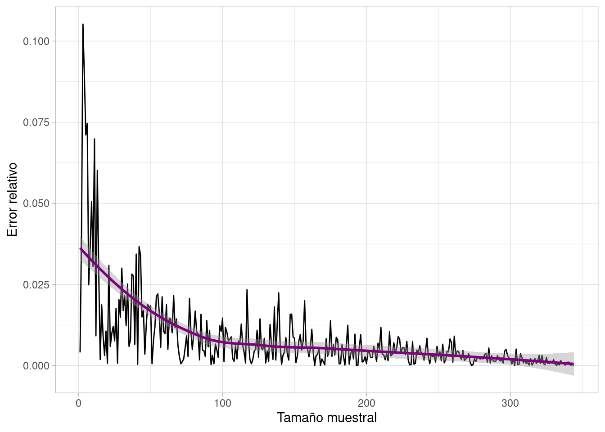

| species | island | bill_length_mm | bill_depth_mm | flipper_length_mm | body_mass_g | sex | year |
|---|---|---|---|---|---|---|---|
| Adelie | Torgersen | 39.1 | 18.7 | 181 | 3750 | male | 2007 |
| Adelie | Torgersen | 39.5 | 17.4 | 186 | 3800 | female | 2007 |
| Adelie | Torgersen | 40.3 | 18.0 | 195 | 3250 | female | 2007 |
| Adelie | Torgersen | NA | NA | NA | NA | NA | 2007 |
| Adelie | Torgersen | 36.7 | 19.3 | 193 | 3450 | female | 2007 |
| Adelie | Torgersen | 39.3 | 20.6 | 190 | 3650 | male | 2007 |
Muestreo (I)
datos
Un repaso a algunos conceptos introductorios al muestreo estadístico
Vi en Twitter esto:
Las encuestas lo han dejado claro.
‚Äî Carlos Sánchez Matoüú≥Ô∏è (@carlossmato) July 17, 2023
Saben lo que vas a votar.
Han decidido que el #23J PP y Vox gobernarán este país.
¿Quito importancia a sus estimaciones?
No, porque generalizan la opinión de que no hay nada que hacer.
Pero no es cierto.
No hay nada escrito.
Si votamos, ganamos pic.twitter.com/LUFoLm3WHT
¿Es inútil el muestreo?
Si lo haces mal, sí. Como todo.
Repaso algunos conceptos relacionados con el muestreo, sacados principalmente del curso de Sampling with R de Datacamp.
De qué sirve el muestreo
Antes de las elecciones se hacen encuestas sobre intención de voto. ¿Qué se te viene a la mente con estas encuestas?
Pues que nunca te preguntan a ti.
(Sí, ya, justo quizá a ti sí, una vez… pero no suele ocurrir. Lo normal es que nunca te hayan preguntado).
A la mayoría de las personas no les preguntan nada.
Pero un muestreo adecuado puede hacer que eso tenga valor.
Es más, un muestreo puede ser tu única opción para estudiar unos datos.
- En un caso como el de las encuestas, no tienen recursos para encuestar a todos los votantes de un país como, pongamos, España (unos 37 millones de personas)
- En un análisis de sangre, no estudian todos los litros de sangre de tu cuerpo: te sacan una muestra y generalizan (sacarte toda la sangre es peligroso: no lo intentes).
- Si tienes una base de datos con millones de clientes, algún algoritmo de machine learning puede suponer mucha carga de trabajo para tu ordenador (no todos tenemos presupuesto para contratar servidores enormes en Amazon). )
¿Tiene sentido siempre el muestreo? No. Si estás corrigiendo unos exámenes de unos alumnos, no tiene sentido que corrijas un porcentaje y extrapoles los demás por ahorrarte el tiempo.
Muestreo aleatorio sistemático
Si has estudiado algo de estadística, te habrás topado con el muestreo aleatorio. Consiste en seleccionar las observaciones para una muestra sin ningún criterio en concreto: esta sí, esta no, esta sí, esta también porque sí, esta no, esta tampoco…
Me gusta un conjunto de datos con métricas de pingüinos disponible en cualquier software estadístico que se precie.
Una de las métricas que tiene es la longitud del pico, en milímetros.

¿Cómo cambia eso si lo dibujas sobre una muestra aleatoria de los pingüinos?
Lo primero es elegir la muestra aleatoria. Supón que etiquetas a cada uno como 1, 2, 3… así hasta 344, que son todos los pingüinos que tienes.
En el siguiente gráfico tienes coloreados en azul los pingüinos que eliges para tu muestra (50).
¿Cómo cambia la distribución de la longitud del pico en esta muestra?
Hemos perdido valores extremos pero se mantiene una forma parecida.
Un tipo diferente de muestreo es el sistemático, que consiste en hacer una selección basada en un criterio con respecto a la posición de la observación en el conjunto de datos. En el siguiente gráfico, pinto en azul al pingüino 1, 7, 13, etc… o sea, selecciono al primer pingüino de cada 6.
Aparte del caso extremo, la distribución no ha cambiado mucho, en parte porque la distribución de las observaciones no sigue ningún orden en concreto. Si tu tabla de datos sigue un orden, deberás valorar si ese orden afecta al sistema que eliges para muestrear tus datos.
Muestreo estratificado
En el conjunto de datos tenemos tres especies de pingüinos.
Algo habitual en machine learning forzar a mantener esa proporción diferente de especies en la muestra elegida, para que el conjunto de datos de trabajo mantenga esa distribución original.
¿Pero qué pasa si no quieres que así sea?
Imagina que estás estudiando si una medicación es efectiva o no. Si mantienes la proporción original, puede ser que de la especie menos representada (Chinstrap) te quedes casi sin muestra.
Eso te puede venir mal, porque tú necesitas que haya muestra de todas las especies, para saber si en una especie el medicamento es más o menos efectivo.
En un caso así, no querrías un muestreo estratificado, sino que forzarías incluso a que en la muestra, todos los grupos estuvieran igualmente representados.
Cómo afecta el tamaño de la muestra
Cuando tienes a mano la población total, puedes comparar los cálculos que hagas en tu muestra con los de la población (para cuando no tengas la población, te hablaré de esto en unos días).
En el caso de los pingüinos, puedo calcular la media de la longitud del pico para la población: 43.9219298.
O también para la muestra que calculé antes:
# A tibble: 1 × 1
media_muestral
<dbl>
1 44.6¿Son muy distintas?
Una medida de esta diferencia es el error relativo:
\[\frac{|media_{pop} - media_{sample}|}{media_{pop}}\]
¿Cuál es la gracia?
Pues que si tu tamaño muestral es muy pequeño, no hay ninguna garantía de que la media (o lo que estés midiendo) se parezca a la poblacional:
# A tibble: 1 × 1
media_muestral
<dbl>
1 45.8Pero si dejas que el tamaño muestral crezca, tu cálculo se estabilizará.

En unos días te escribo sobre cómo aproximar esto cuando no tienes acceso a la media poblacional, pero que puedas valorar si tu muestra es adecuada o no.